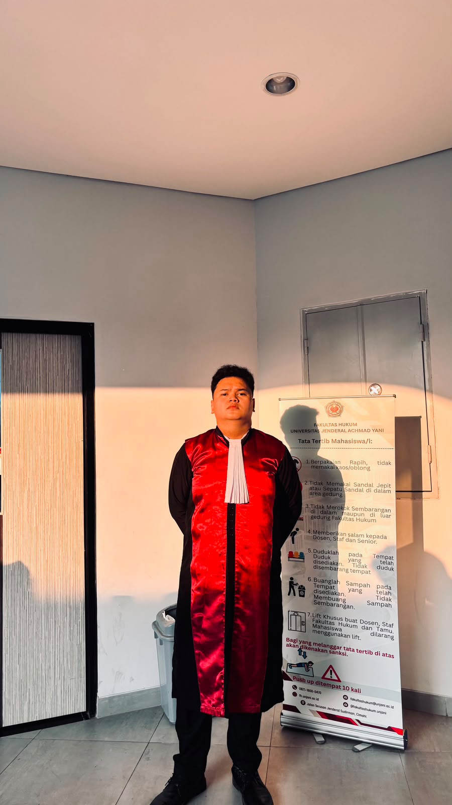
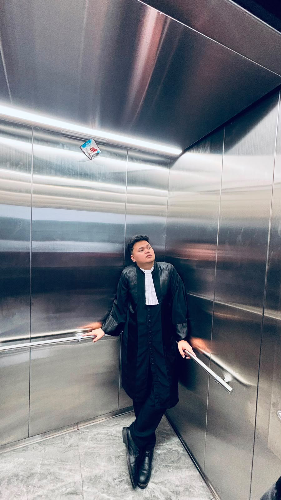
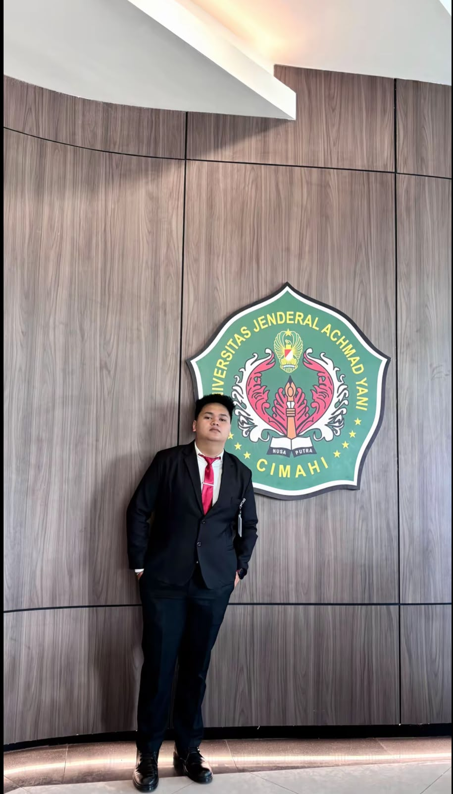

01
Bahagia
Semoga senyummu selalu terjaga dan ada banyak alasan baru untuk tertawa.

Untuk Adit
Nggak mewah, tapi dibuat pelan-pelan dan sepenuh hati.
Paling pas dibuka dengan suara
Hari ini tentang kamu
Dua Puluh Empat Agustus — hari yang akan selalu aku ingat.

Satu hari, banyak doa baik
Ada orang yang hadir, dan meninggalkan pelajaran yang bertahan lama.
Terima kasih atas tiap pelajaran yang diberikan. Untuk setiap cerita, tawa, salah, benar, dan hal-hal kecil yang akhirnya membuat aku tumbuh jadi pribadi yang lebih baik.

“A man who gives many valuable lessons.”
— dari seseorang yang selalu menyayangimu
Tiga hal untuk kedepannya
Bukan cuma hari ini—semoga doa-doa ini ikut menemani langkahmu setelahnya.
Semoga senyummu selalu terjaga dan ada banyak alasan baru untuk tertawa.
Semoga harapan yang selama ini kamu simpan, pelan-pelan bisa kamu raih.
Semoga kamu selalu bertemu orang-orang tulus dan hal-hal yang membuat hati tenang.
03 — sepucuk surat
Kalau sudah siap, baca pelan-pelan. Nggak perlu buru-buru sampai halaman terakhir.
Hai, Sayang.
Sayang bsok aku dah balik ke jkt,maap ya sayang aku belum bisa menjadi yang terbaik buat kamu aku jg masih sering buat salah dimata kamuu.aku jg gk tau setelah perjalanan ini aku jalanin idupnya gimanaa,aku bahkan blum pernah bisa liat orang yang aku cintai secara langsung even itu hanya sebatas sekilas aja.tapi semoga aku bisa cepat berdamai sayang dengan hidup akuu.aku harap kamu juga bisa bahagia selalu dan dikelilingi dengan orang yang selalu dukung kamu. Kalau nnti kamu juga butuh apa-apa dari aku atau apapun itu aku bakal tetap sedia kok.
Untuk selama ini dan sampai saat ini aku ucapin terimakasih sayang atas segalanya. Aku bilang gini bukan karena aku mau lost contact lagi. malahan aku mau kita bisa contactkan hingga hari nanti,aku bilang gini karena aku yang udh mau balik tapi belum sempat liat orang yang aku sayang,orang yang aku cinta,orang yang aku kangeninn selama inii.
Sumpah demi tuhan YANGG aku beneran cinta sama kamu
LOVE U TILL BRAND NEW DAY…❤️❤️